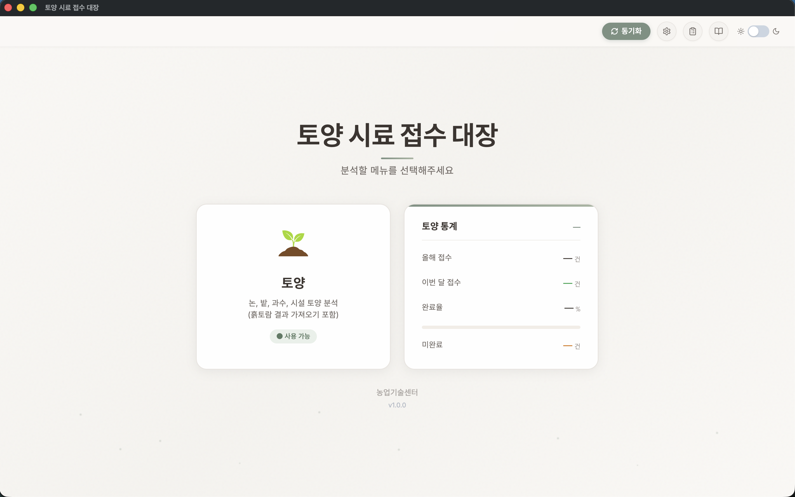
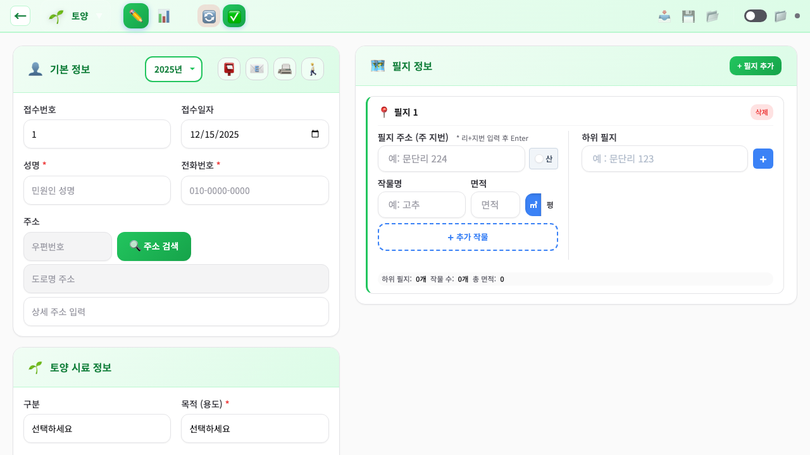
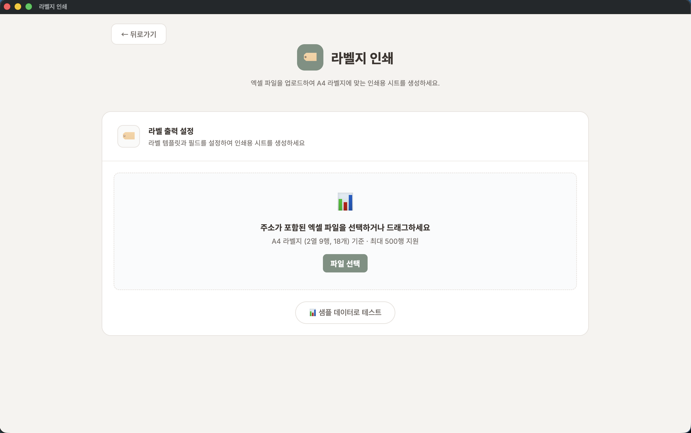

화면 미리보기
실제 프로그램 화면입니다.

메인 화면
한눈에 보는 통계
첫 화면에서 올해 접수 건수·완료율·이번 달 접수를 바로 확인합니다. 토양 카드를 누르면 접수 화면으로 이동합니다.

시료 접수
필지·작물을 한 번에
기본 정보와 필지 정보를 나란히 입력합니다. 한 필지에 여러 작물, 한 접수에 여러 필지를 추가해도 접수번호가 자동으로 정리됩니다.

접수 목록
찾고, 거르고, 내보내기
연도·경지구분별로 목록을 보고, 검색·필터로 원하는 시료만 추립니다. 엑셀로 내보내 보고서에 바로 활용하세요.

라벨 인쇄
시료 라벨 출력
접수한 시료의 라벨을 보기 좋게 인쇄합니다. 현장에서 시료를 빠르고 정확하게 구분할 수 있습니다.